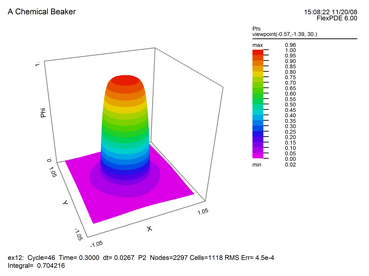
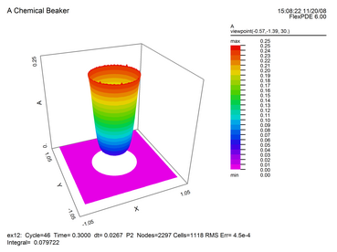
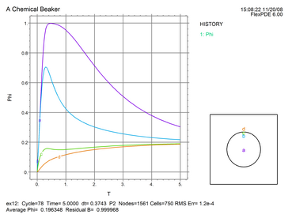

|
A Chemical Beaker |

  
|
|
A Chemical Beaker |
|
As an example of Regionally Inactive Variables, let us use the Cartesian Blob test problem, and modify it to represent a chemical beaker immersed in a cooling bath.
Inside the beaker we will place chemicals A and B that react to produce heat. Temperature will be allowed to diffuse throughout the beaker and into the cooling bath, but the chemical reactions will be confined to the beaker. The cooling bath itself is insulated on the outer wall, so no heat escapes the system. The modified script is as follows:
TITLE "A Chemical Beaker"
VARIABLES
Phi(0.1) { the temperature }
A(0.1), B(0.1) { the chemical components }
DEFINITIONS
Kphi = 1 { default thermal conductivity }
Ka = 0.01 Kb = 0.001 { chemical diffusivities }
H = 1 { Heat of reaction }
Kr = 1+exp(3*Phi) { temperature dependent reaction rate }
Cp = 1 { heat capacity of mixture }
R = 0.5 { blob radius }
A0 = 1 B0 = 2 { initial quantities of chemicals }
INITIAL VALUES
A = A0
B = B0
EQUATIONS
Phi: Div(kphi*grad(phi)) + H*kr*A*B = Cp*dt(phi)
A: Div(ka*grad(A)) - kr*A*B = dt(A)
B: Div(kb*grad(B)) - kr*A*B = dt(B)
BOUNDARIES
REGION 1 'box'
INACTIVE(A,B) { inactivate chemicals in the outer region }
START(-1,-1)
NATURAL(Phi)=0
LINE TO (1,-1) TO (1,1) TO (-1,1) TO CLOSE
REGION 2 'blob' { the embedded blob }
kphi = 0.02
START 'ring' (R,0)
ARC(CENTER=0,0) ANGLE=360 TO CLOSE
TIME 0 TO 40
PLOTS
FOR t=0.1, 0.2, 0.3, 0.5, 1, 2, 5, 10, 20, ENDTIME
SURFACE(Phi)
SURFACE(A)
HISTORY(Phi) AT (0,0) (0,0.4) (0,0.49) (0,0.6)
REPORT integral(Phi)/integral(1) AS "Average Phi"
REPORT integral(B,'blob')/integral(1,'blob') as "Residual B"
END
 |
This plot of temperature shows diffusion beyond the boundaries of the beaker. |
 |
This plot of concentration A shows depression in the center where higher temperature increases the reaction rate. No chemical diffuses beyond the beaker boundary. |
 |
This plot of temperature history shows an average value of 0.196348. This agrees favorably with the energy conservation value of H*pi*Rad^2/(Cp*Box^2) = 0.196350. The residual quantity of B is correct at 1.0. |
Page url: index.html?a_chemical_beaker.html